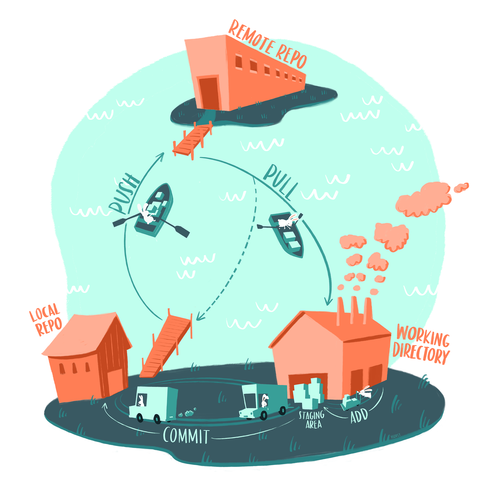
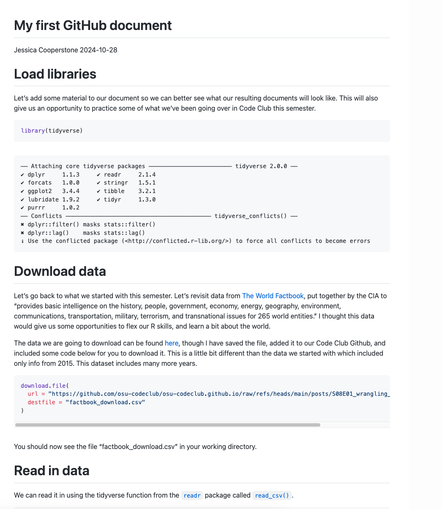
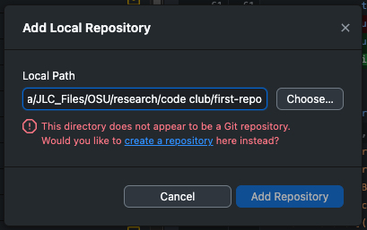
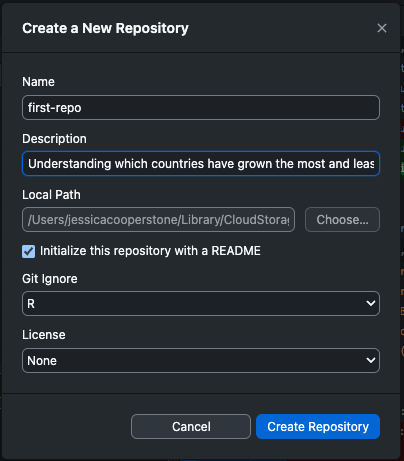
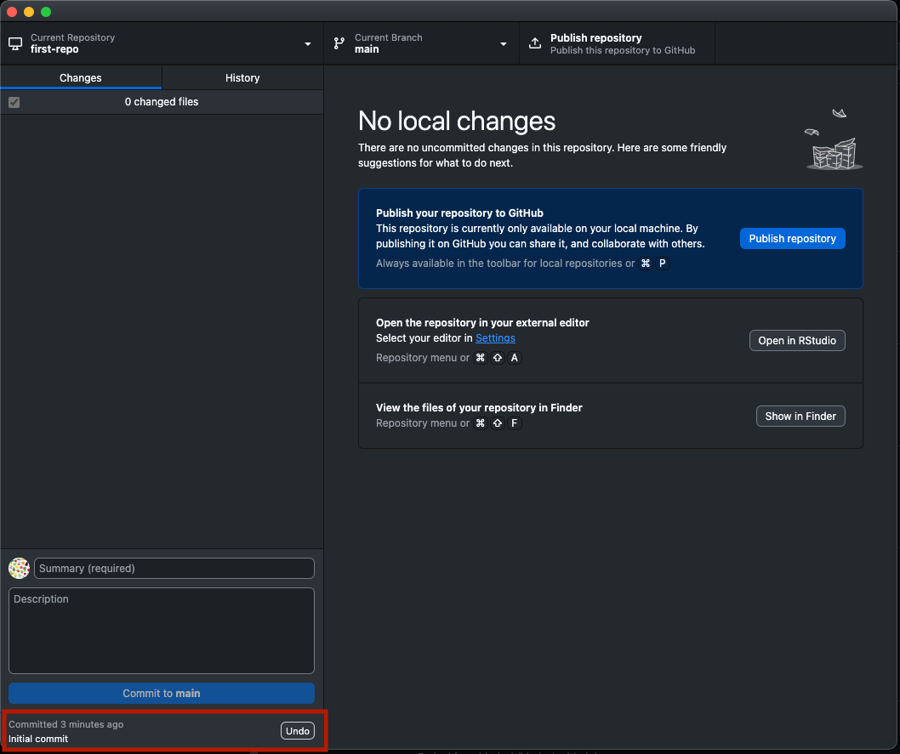
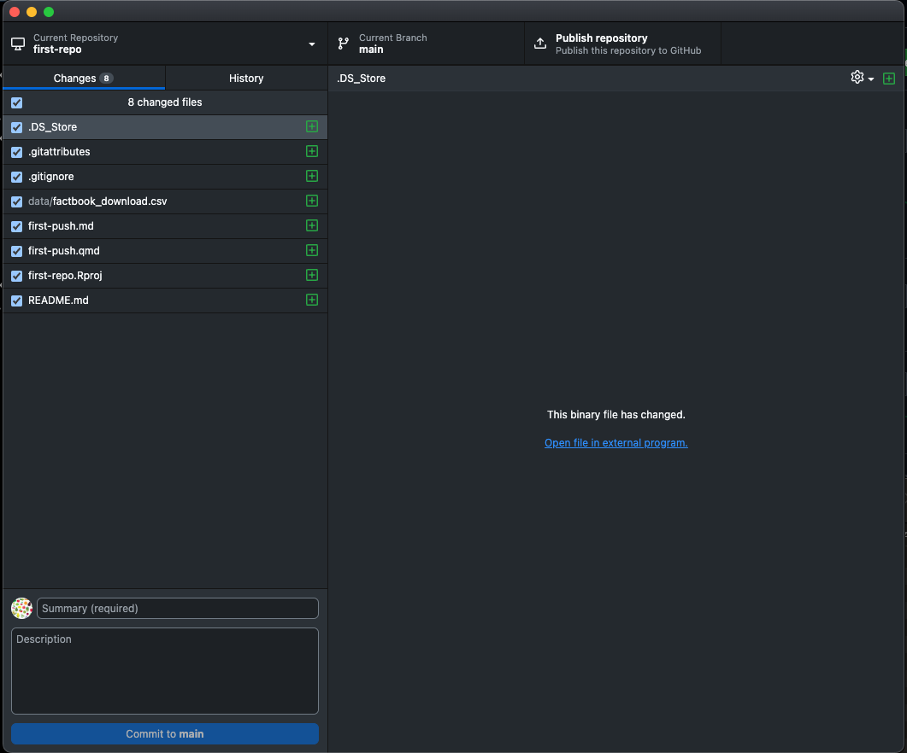
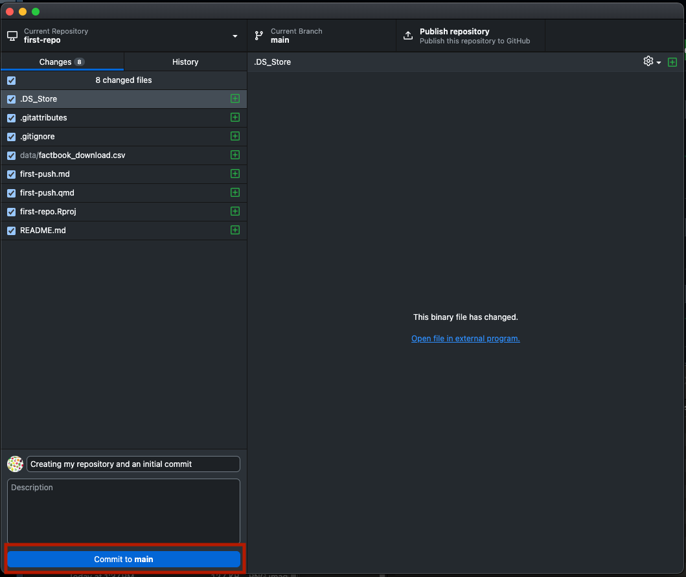
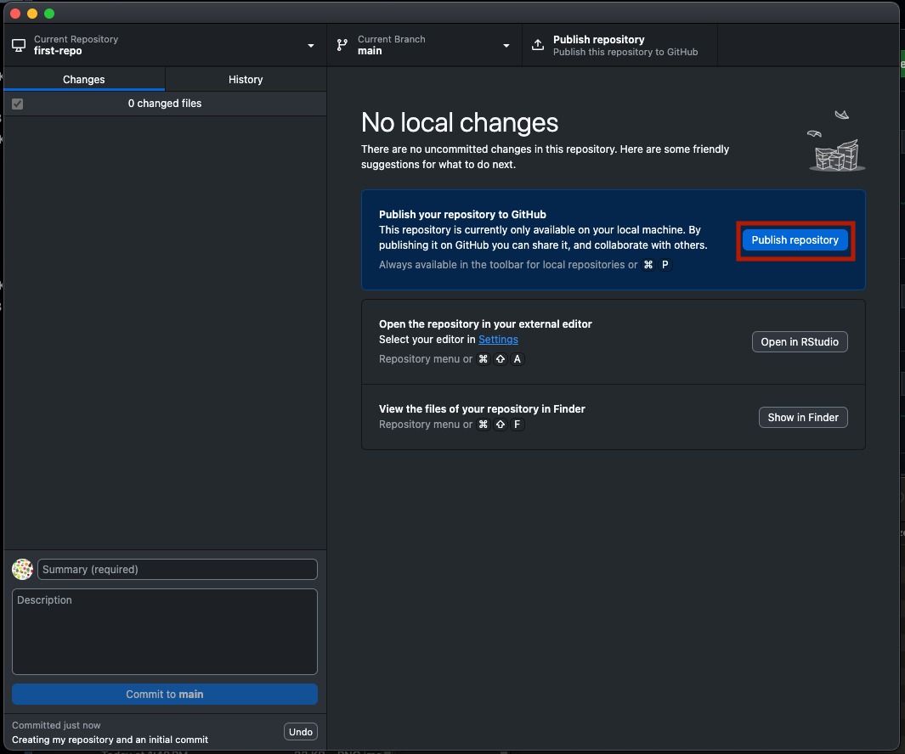
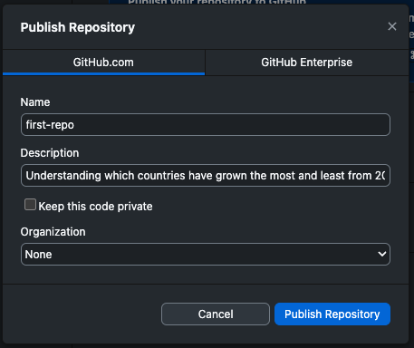
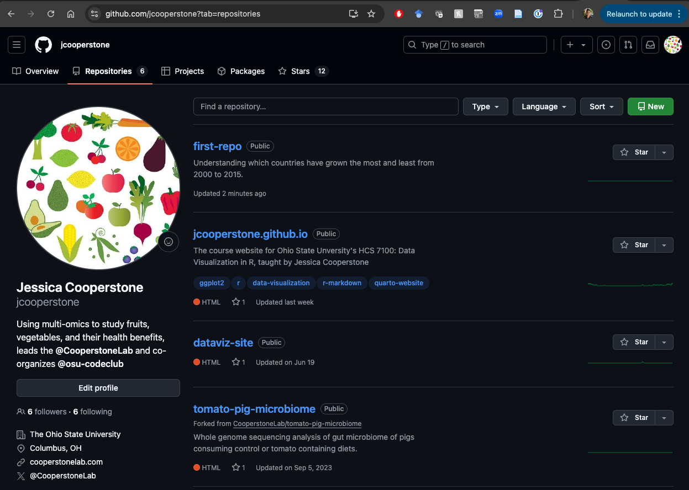

Reproducibility 04: Getting started with Git and GitHub üê±
Using Quarto/RStudio, GitHub, and GitHub Desktop to post code to a repositoryü§©Ô∏è.
git
github
version control
quarto
1 Introduction
We are continuing this semester’s Code Club series on reproducible research. So far, we have gone through:
- Some basics of reproducibility, file organization, and RStudio projects
- An intro to Quarto
- A little more about Quarto
Today, we are going to take some code we’ve written and push it to a repository on GitHub. To do this we will need to:
- Install Git
- Create a GitHub account
- Install GitHub desktop and link it to your GitHub account
- Render a GitHub flavored markdown document
- Add our repository to GitHub desktop and add version control
- Publish your repository
The book Happy Git and GitHub for the useR is a super good resource by Jenny Bryan that talks about all this in extreme detail. Some of my materials below are inspired by some of this material.
1.1 What is Git?
Git is a version control system that allows materials (mostly code) to be tracked in an organized way. Every time any changes to the files that are being monitored by Git are changed, that change is tracked. You can think of it as combining the tracked changes capabilities of Word, with the file sharing from OneDrive.
We are going to use Git (combined with GitHub, more on that in a second) to take the information embedded within our Quarto document and make it available on GitHub. You could opt use Git for just yourself because it would allow you to always revert back to a previous version of any of your files in case you make a big mistake.
Here is a nice illustration by Allison Horst that shows the basics of git (at least the basics of what we will be using).
1.2 What is GitHub?
GitHub hosts Git-based projects. GitHub can be free (especially for academic projects), and is where we house all our Code Club content. I additionally use GitHub in my lab for creating code repositories that go along with our publications.
1.3 What is GitHub Desktop?
GitHub Desktop is a application that lets you use Git and GitHub in a less-scary-than-working-in-your-terminal way. Here is a longer tutorial on how to use GitHub desktop.
2 Install Git
If you don’t already have Git, download and install it: https://git-scm.com/downloads.
3 Create a GitHub account
In order to connect your local files to GitHub, you need a GitHub account.
Create a GitHub account by going to github.com/join.

You will have to pick a username - remember that other people will see this username so use one you’d feel comfortable with. Here is some advice for picking a username. I use my OSU email address with GitHub but you can use a personal one too.
You will then have a profile on GitHub, here’s an example of mine.
4 Install GitHub Desktop and link it to your account
We are going to interface with GitHub via Github Desktop because I think this is the easiest way to do it/teach it. It is definitely not the only way.
First download GitHub Desktop and install it: https://desktop.github.com/
Open GitHub Desktop and log into your GitHub account by going to Preferences > Accounts > Sign in
5 Render a GitHub flavored markdown (GFM) document to prepare to push
We need some material to put in our new repository. We can use the code that we practiced wrangling with last week.
If you missed last week, you can download a .qmd file to work from here.
If you download my
.qmd
I indicated in the YAML that eval: false so that the code doesn’t run on the website. You will want to remove this part of the YAML on lines 5 and 6.
Open up this .qmd and set your YAML such that it renders as the format GitHub flavored markdown.
---
title: "My first code on GitHub"
author: "Jessica Cooperstone"
date: "November 4, 2024"
format: gfm
---Render this document. You should now see in the Files quadrant a new file called name-of-quarto-doc.md which contains your rendered document in GitHub flavored markdown (markdown is what the .md is).
Your rendered document should look something like this:

In the folder of my repo, I have the following content:
- an .
Rprojfile - a
.qmdfile - a
.mdfile that rendered from the.qmd - a data folder where I store the data I read in
We can upload all, or only some of this material to GitHub. I am going to show you how to send it all today, and in the next lesson on Git, we will go over gitignore.
6 Add a local repository to GitHub desktop and add version control
Now we are going to add the folder containing our .Rproj to be tracked with GitHub Desktop.
In GitHub Desktop, click File > Add Local Repository, select the directory with your .Rproj’s top-level folder, and click Add Repository.

When we go to do this, we see that GitHub desktop is telling us that this directory does not appear to be a Git repository. We can click “create a repository” to initiate version control on this folder.
Here, you want to:
- give your repo a name (mine is first-repo)
- provide a description
- provide a local path to your folder (this should have already been done in the previous step)
- check if you want to initialize with a README (we do, check yes)
- select if you want a git ignore (we do, set the type as R, and we will talk about it more next week)
- indicate if you want a license on your repo (I am not going to set one up)
Then you can click the blue button Create Repository.

You will notice that now in our .Rproj folder, we have some new files, including:
.gitattributes(which gives attributes for pathnames).gitignore(which tells git which files to ignore, and we are going to go over this in the next sessions)README.md(contains the information that will be a part of your readme file)
7 Publish our repo
Now, we can publish our repo on GitHub. This will create the repo on GitHub, and it will contain all of our content in it.
What we can see that GitHub desktop has done for us, since we are setting our repo up for the first time, is automatically made an Initial Commit (see bottom left). We are going to click Undo next to this so we can practice doing this ourselves. You won’t have to do this step in the future.

Now we can see in GitHub desktop all of the files that are going to be sent to our repository on the lefthand side of the screen.

Remember, this is the process of interacting with GitHub.
We can then add a message about our first commit and click Commit to main.

Now we need to send our repository to GitHub. Since we are doing this for the first time, we see a button that says Publish repository. In the future, this button will say Push to origin.

We are getting one last popup asking us to confirm our repo info, which can do with the Publish Repository button.

Our repo is now on GitHub, and we can see it online if we go to the repositories tab of your personal GitHub page. You can see how this looks on my page - this is probably your first repo, and although I’ve called mine first-repo it is not for me.

We can click on our repo and see what it contains. If we click on our file that ends in .md, we can see our GitHub flavored markdown rendered document. Here is mine.
8 Next time
Next session we are going to go over:
- Making changes and pushing them to GitHub
- Setting our gitignore
- Maybe some other stuff